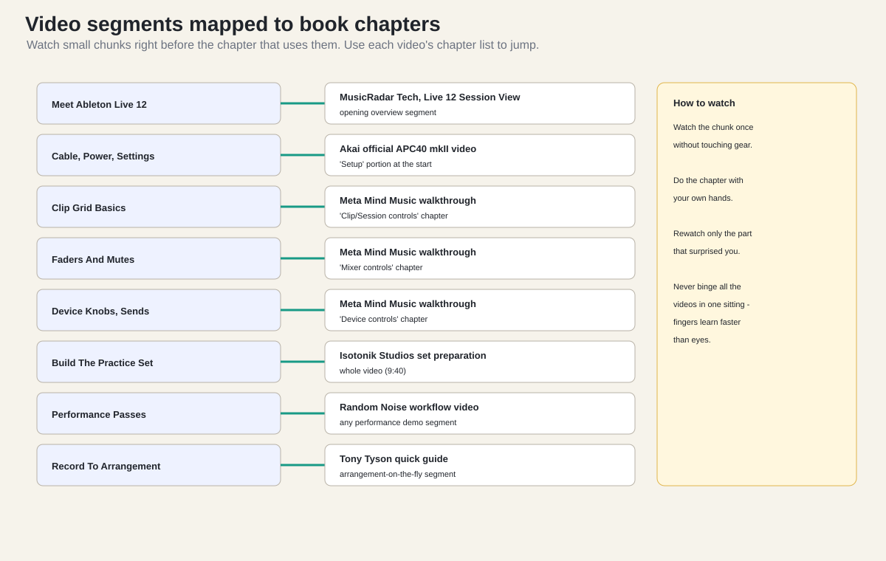

The best zero-to-one path is not one video. APC40 MK2 videos tend to
split into three buckets: hardware operation, Live setup, and
performance workflow. I used the following source pack to shape this
book.
Why it matters: this is the most useful APC40 MK2 beginner
walkthrough found for the surface itself. Its chapter path covers setup,
mixer controls, transport controls, device controls, clip/session
controls, global controls, and pro tips.
Why it matters: this is the official APC40 mkII operation overview.
It covers clips and scenes, mixer, device control, transport, track
control, footswitch, and customization.
Do not watch the source pack in random order. Use this order:
Watch the Akai official APC40 mkII video once without touching
anything.
Watch the Meta Mind Music video with the APC on your desk.
Pause at the setup section and configure Ableton exactly.
Watch the mixer and device-control sections while moving only those
controls.
Watch the Isotonik set-preparation video after you understand the
grid.
Watch the MusicRadar Live 12 Session View video when you are ready
to turn loops into a performance.
Watch the Random Noise workflow video after you can launch, fade,
mute, and record a simple set.
This book compresses that path into a single project.
3.2 Watch In Segments, Not
Marathons
Do not watch any of these videos end to end in one sitting. Each
chapter of this book names the one segment worth watching right before
you do that chapter’s work. Use the chapter list under each YouTube
video (or the chapter markers on the seek bar) to jump straight to the
named segment.

Video segments mapped to book
chapters.
Before this chapter
Watch this segment
Meet Ableton Live 12
MusicRadar Tech Live 12 video: the opening Session View
overview.
Cable And Power + Settings
Akai official video: the setup portion at the start.
Clip Grid Basics
Meta Mind Music: the clip/session controls chapter.
Random Noise: any live performance demonstration segment.
Record The APC Performance
Tony Tyson: the arrangement-on-the-fly segment.
The watch boxes in each chapter repeat this, so you never need to
come back to this table. The rule is always the same: watch the chunk
once without touching gear, do the chapter with your hands, rewatch only
the part that surprised you.